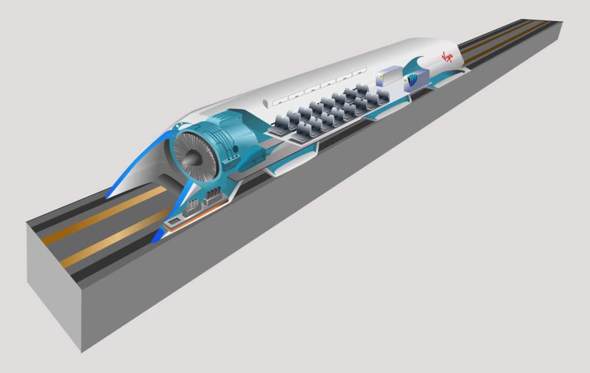
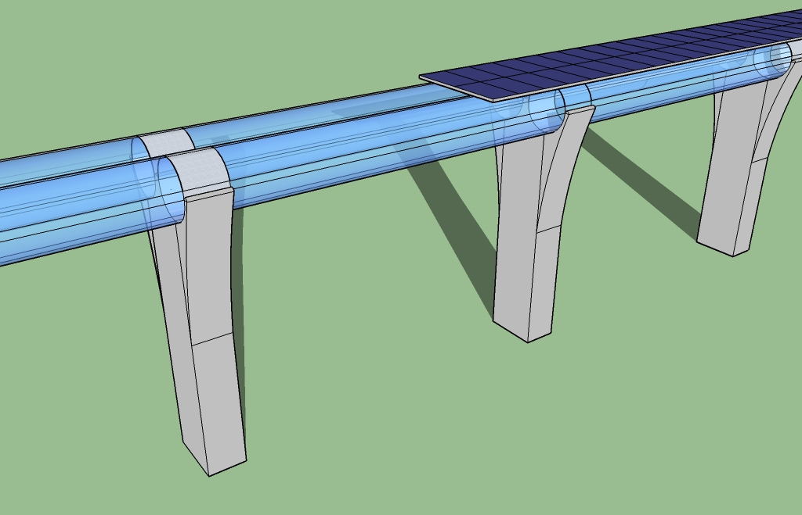

Hyperloop
From Wikipedia, The Free Encyclopedia
Hyperloop is a proposed mode of passenger and freight transportation that would propel a pod-like vehicle through a near-vacuum tube at more than airline speed. The alpha version of the proposal, published on the SpaceX website, describes design claims of the system, as well as its function. The pods would accelerate to cruising speed gradually using a linear electric motor and glide above their track using passive magnetic levitation or air bearings. The tubes could also go above ground on columns or underground, eliminating the dangers of grade crossings. It is hoped that the system will be highly energy-efficient, quiet and autonomous.
The concept of high-speed travel in tubes has been around for decades, but there has been a resurgence in interest in pneumatic tube transportation systems since the concept was reintroduced, using updated technologies, by Elon Musk after 2012, incorporating reduced-pressure tubes in which pressurized capsules ride on an air cushion driven by linear induction motors and air compressors.
The outline of the original Hyperloop concept was made public by the release of a preliminary design document in August 2013, which included a suggested route running from the Los Angeles region to the San Francisco Bay Area, paralleling the Interstate 5 corridor for most of its length. Preliminary analysis indicated that such a route might obtain an expected journey time of 35 minutes, meaning that passengers would traverse the 350-mile (560 km) route at an average speed of around 600 mph (970 km/h), with a top speed of 760 mph (1,200 km/h). Preliminary cost estimates for the LA–SF suggested route were US $6 billion for a passenger-only version, and US $7.5 billion for a somewhat larger-diameter version transporting passengers and vehicles. Transportation analysts, however, had doubts that the system could be constructed on that budget; some analysts claimed that the Hyperloop would be several billion dollars overbudget due to construction, development and operation costs.
While the term Hyperloop is in some countries a registered trademark of Space Exploration Technologies Corporation (SpaceX) for the high speed transportation of passengers and goods in partially evacuated tubes, the Hyperloop concept has been explicitly open-sourced by Musk and SpaceX, and others have been encouraged to take the ideas and further develop them.
To that end, a few companies have been formed, and several interdisciplinary student-led teams are working to advance the technology. SpaceX is building an approximately 1-mile-long (1.6 km) subscale track for its pod design competition at its headquarters in Hawthorne, California.
Some experts are skeptical, saying that the proposals ignore the expenses and risks of developing the technology and that the idea is "completely impractical". Claims have also been made that the Hyperloop is too susceptible to disruption from a power outage to be considered safe.